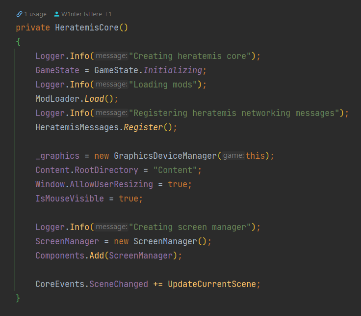
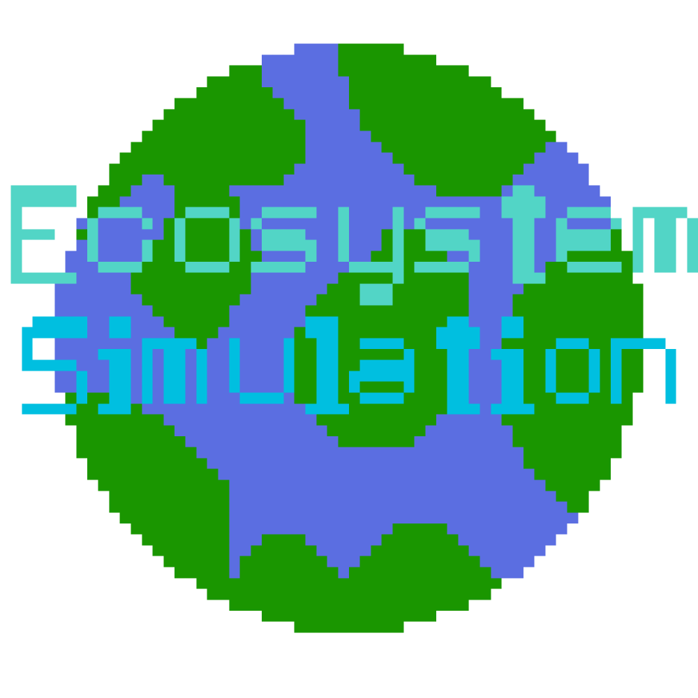
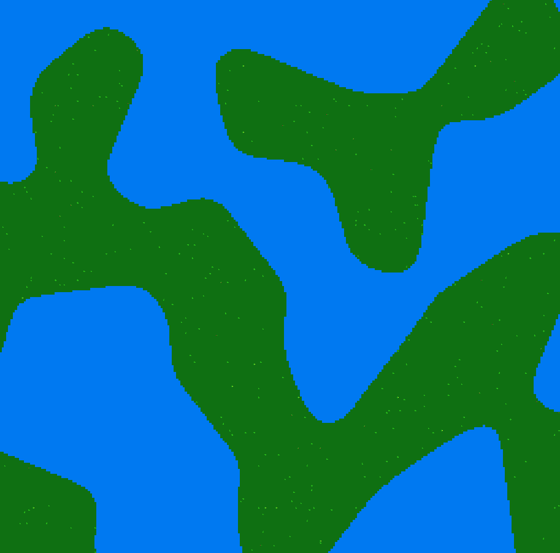
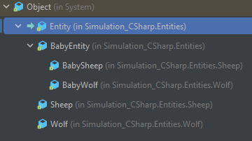
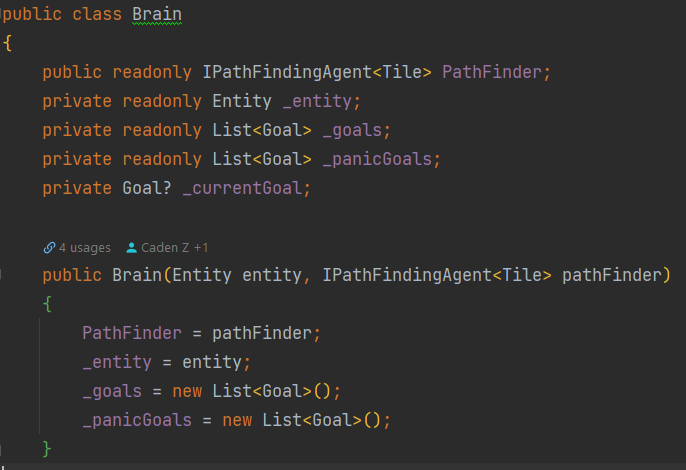
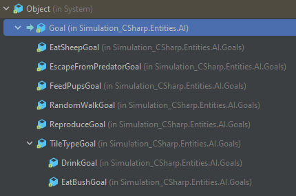

This year I worked on 3 projects that are worth showing. They are Heratemis, D&D Manager, and Ecosystem Simulation. Non of them are "complete". But they each taught me a lot of things about computer science, and have something I can show.
Projects
1. Heratemis

This is a work-in-progress project in the very early stage of development. It is game project written in C# with a game library called Monogames (A fork of the Microsoft XNA framework). Which only provides high-level interfaces to low-level operations such as getting user input and displaying graphics.
I wanted this to be a project where I work on most of the code myself instead of using different libraries/frameworks. That is the reason why I chose Monogame over other easier options such as Unity.
I also wanted this project to be a multiplayer project, and to make it easy for myself in the future, so I layed all the foundation down in a peer-to-peer manner. Everything is clearly separated into the server-side and client-side.
The game creates and starts an internal server when it is launched, and creates a client that connects to that server. That is done through the Lidgren.Network library. As implementing networking from scratch was not something I feel like I am comfortable doing yet.
I also wrote a "working" physics engine pretty much from ground up for the project. I only used the standard C# math library.
Client LevelServer Level
As you can see in the video, there is collision, gravity, acceleration in the physics engine. Although the graphics looks rudimentary, and the collision is slightly off, I am very proud that I was able to achieve this.
2. D&D Manager
D&D Manager is a work-in-progress web-development project. I have made 2 versions of this app throughout this year. The first version I submitted in my midterm progress report, so I will be talking about the second version. The app (frontend) is built with Flutter (UI Framework) and Dart (Programming Language).
The frontend is currently up and hosted by github pages here
We also made a backend server written in Python and uses the FastAPI library. It handles storing user data, user authentication, and other things you would expect a backend to do. The backend server is hosted on our own computers so it is rarely online. User authentication and login is completely implemented on both frontend and backend, but since server is not up 24/7, it is not available all the time.
We have disabled user sign-in requirements to access other features we already have for debugging purposes. So if you want, you can go here and explore what we already have.
3. Ecosystem Simulation

I think this is my most complete project of all listed here. All there is left to do is to add more types of creatures to increase variety, and purhaps improve the creature AIs.
This project as explained in the name itself, is a simulation of the Natural Ecosystem.
This project again is completely written in C# with Raylib, a high-level graphics rendering library written in C. I am simply using a C# binding of the original library.
In this project, I used Perlin Noise to procedurally generate a top-down tile-based terrain with land, water and some fruit bushes.


The entire project is designed around Object Oriented Programming Patterns (such as inheritance and polymorphism) for maximum flexibility to fit the flexible nature of an ecosystem simulation project. For example, the image on the left is the hierarchy of all the entities (creatures) in the game.
Beside procedural generation and project architecture, I was also able to take a deep dive in the realm of algorithms and artificial intelligence.
All entity behaviours are controlled by a brain object that each entity has.
The brain has an Update function that is called every game tick. It is responsible for picking a Goal for the entity to perform.
A goal is picked through a variety of choices. It first finds the goal with the highest priority from all the goals the brain knows (registered during the entity creation). Then it checks if the goal with the highest priority can be performed, if yes, it picks this goal. If not, it finds the goal with the second highest priority and repeat.


So, how do goals work? They are made using extensive inheritance and polymorphism as well. As you can see in the screenshot. There is a base Goal class and every goal derives from that class. The Goal class has a few abstract methods that requires its children to implement. They are called in the Brain class when executing the goal, and determining if this goal can be picked. They are all pretty well documented in the source code, so you can check that out if you want to.
As you might have noticed on the screenshot of the Brain class above, beside the list of normal goals, there is also a list of panic goals. They are goals that will be checked if can execute every game tick even if the brain has already chosen a goal to complete. They will interrupt the current performing goal and perform the panic goal instead once the predicate that determines if the goal can be picked returns true. An example of this would be the EscapeFromPredicatorGoal that the sheep has, when a wolf is close by, the sheep will try to escape from it doesn't matter if it is already doing something.
This goal systems allows extremely flexible AI behaviour.
There is so much more I can talk about this project, but I simply can not talk about everything, I highly recommend you taking a look at it yourself.